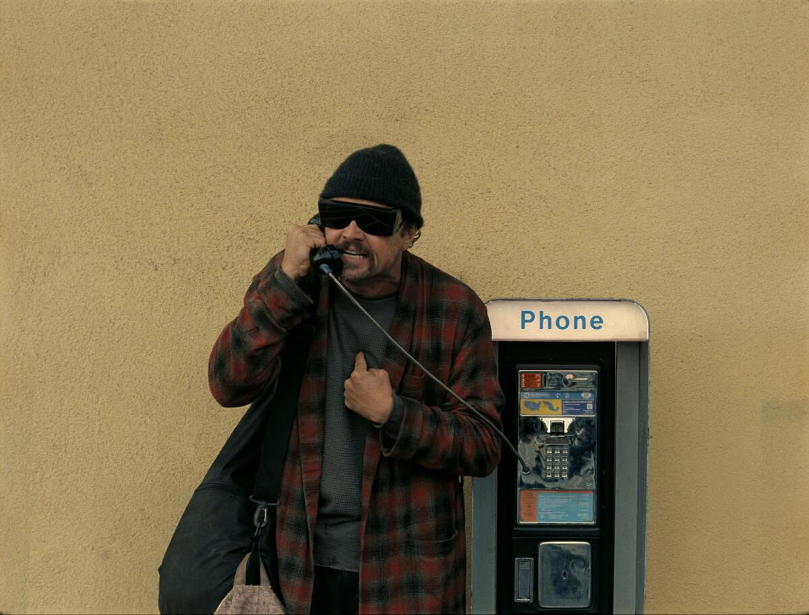

One Battle After Another is a film about a washed up revolutionary, named Bob, who has a duaghter named Willa that goes missing when his nemesis resurfaces. Bob has to fight his way to find his daughter as he suffers the consequences of his past. Although it has a 2 hour and 42 minute run time, the movie is paced very well and feels shorter because of how engaging it is all throught the film. Every character actually felt interesting making you care about them more and on top of that the cast's acting was very good. A great example being Sean Penn as Steven Lockjaw who was the villian of this movie. The cinemetography was also amazing and alot of the shots are visual pleasing and left me stunned. Although a great movie this project was a major disappointment at the box office and lost over 100 million dollars in profit.
Best Picture Best
Supporting Actor - Sean Penn
Best Director - Paul Thomas Anderson
Best Adapted Screenplay
Best Casting
Best Editing